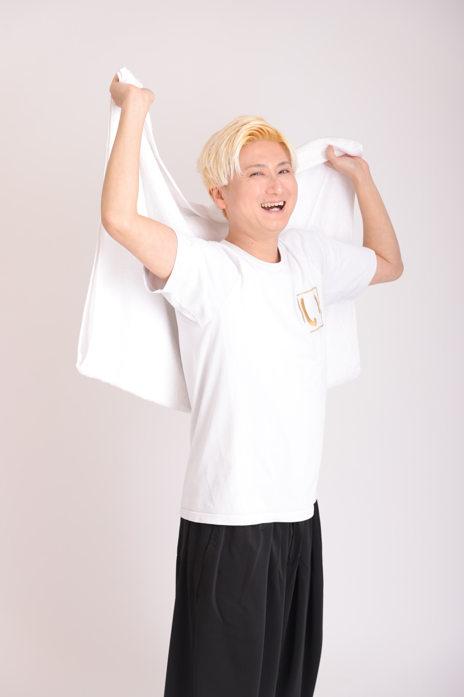
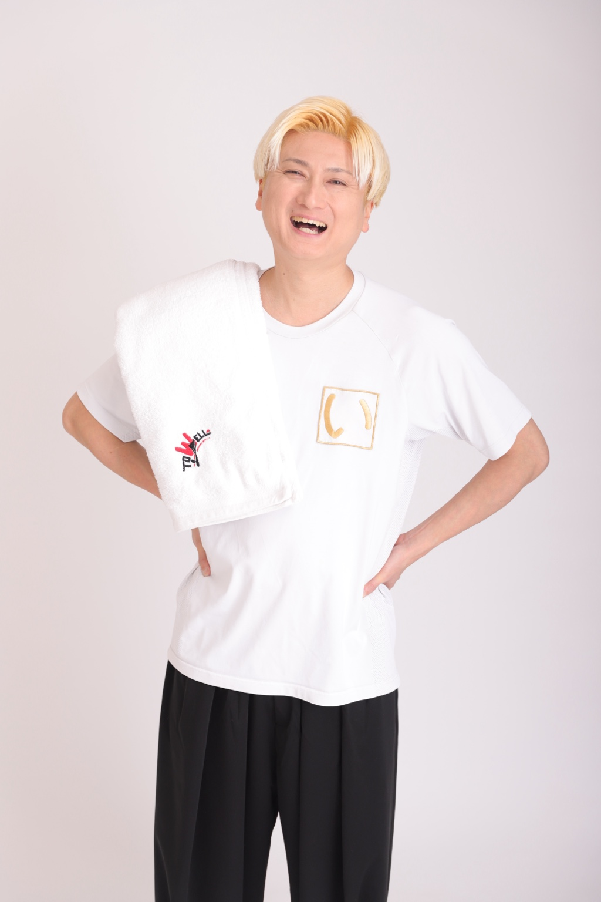

ABOUT
会ってみたいと思ってもらうための、最初の入口。
1985年、名古屋生まれ。どっかんプロ所属。お笑いコンビ「角砂糖」「ウェイウェイズ」を経て、現在はピン芸人として活動。ラジオパーソナリティ、リポーター、イベントMC、熱波師としても活動の場を広げています。
伊倉ゆうについてENTRANCE
活動の入口。
PROJECT IKURA
このサイトは、育てていく場所です。
出演歴やプロフィールだけでなく、ラジオ、サウナ、興味・探究分野、これから増えていくエッセイまで。伊倉ゆうという人を、少しずつ知ってもらうための場所として更新していきます。